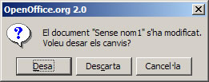

UF4. Fulls de càlcul
G rapida - sortir
Sortir del programa
Per sortir de l'OpenOffice.org Calc podeu fer servir qualsevol de les accions següents:
- Demaneu l'opció de menú Fitxer | Surt
- Feu clic al botó Tancar de la finestra del programa .
- Activeu l'opció Tancar del botó de control de la finestra .
- Premeu, simultàniament, les tecles Alt+F4
- Feu doble clic en el botó de control de la finestra del programa .
Si s'ha fet alguna modificació que no s'hagi desat, l'OpenOffice.org Calc us demanarà si desitgeu desar els últims canvis (botó Desa ), si voleu abandonar el programa sense desar els canvis (botó Descarta ), o si voleu cancel·lar l'acció de sortir del programa (botó Cancel·la )



|
|

|
|
|